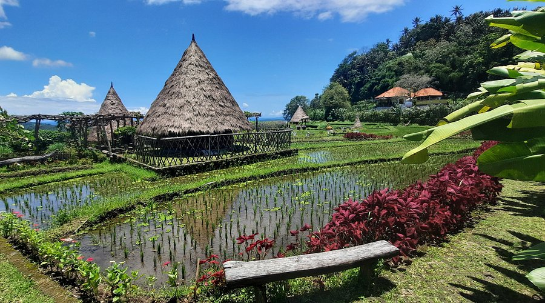
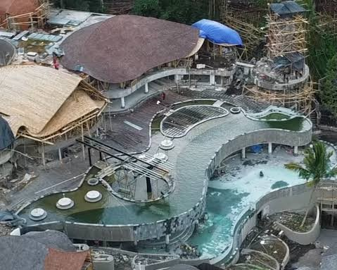

01
Profil Desa

Kenali sejarah, letak geografis, dan kehidupan sosial masyarakat Desa Ababi yang kaya akan kearifan lokal.
Baca Detail"Melangkah menjauh dari hiruk-pikuk kota dan temukan kedamaian di Desa Ababi. Nikmati keasrian alam yang terjaga, pelajari kearifan lokal warisan leluhur, dan rasakan kehangatan sambutan masyarakat kami."

Salah satu peninggalan sejarah yang mulai dibangun pada tahun 1946 dan rampung pada tahun 1948 oleh Raja Karangasem, Anak Agung Anglurah Ketut Karangasem Agung.
Platform digital ini dirancang sebagai panduan lengkap bagi wisatawan lokal, mancanegara, dan pencinta budaya yang ingin menikmati pengalaman liburan otentik.
Kenali sejarah, letak geografis, dan kehidupan sosial masyarakat Desa Ababi yang kaya akan kearifan lokal.
Baca Detail
Pelajari kebudayaan otentik, jadwal upacara adat, serta produk kerajinan tangan lokal khas warga desa.
Baca Detail
Jelajahi keindahan mata air alami, pemandangan sawah terasering, dan spot ekowisata menarik di Ababi.
Baca Detail
Rasakan kenyamanan menginap di homestay milik warga lokal dan nikmati suasana pedesaan Ababi yang tenang, asri, serta penuh kehangatan.
Baca DetailTemukan lokasi kami di Karangasem, Bali dengan mudah melalui peta interaktif di bawah ini.